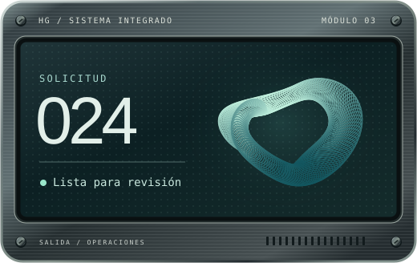

Radar de licitaciones
Encuentre compras públicas que calzan con su empresa y guarde las que quiere evaluar.
Monitor de oportunidadesRadar HG
Más cerca del centro, cierre más próximo
Ingeniería de software / Temuco, Chile
Somos una empresa de software de Temuco. Desarrollamos sistemas a medida, conectamos plataformas y automatizamos el trabajo manual de pymes, empresas e instituciones públicas.

Laboratorio interactivo
Explore tres de nuestros sistemas con datos de ejemplo.
Encuentre compras públicas que calzan con su empresa y guarde las que quiere evaluar.
Elija una de las siete cabañas del recinto y reserve una estadía. El calendario muestra qué noches siguen disponibles.
Calendario de ejemplo · Enero 2027
Sistema en desarrollo
Arme una cotización con ítems del catálogo y conviértala en una orden de venta.
Preparado paraTaller del Sur
Emisión06 ene 2027
| Descripción | Cant. | Importe |
|---|
Vigencia de la cotización: 15 días.
Documento de ejemplo1 / 1Catálogo de servicios
¿Busca un sistema para su organización? Conversemos su proyecto.
Nuestro método
01 / Descubrimiento
Nos sentamos con las personas que hacen el trabajo. Analizamos dónde se repite una tarea, qué se demora y a quién afecta. Con ese diagnóstico proponemos una solución.
Revisamos las pantallas con su equipo y dejamos por escrito qué debe hacer el sistema, cuánto cuesta y cómo se comprobará la entrega.
Entregamos avances que su equipo puede usar. Probamos también las excepciones, como una reserva duplicada o una orden incompleta.
Publicamos el sistema, capacitamos a quienes lo operan y revisamos los primeros casos reales hasta la recepción conforme.
Servicios
Cuando llegan solicitudes por correo, alguien debe leerlas, clasificarlas y copiar los datos.
Configuramos la extracción, las reglas de derivación y una bandeja para revisar campos dudosos.
Una solicitud de compra queda asignada al área que la aprueba.
Ventas, operaciones y finanzas mantienen versiones distintas de una misma orden.
Conectamos las herramientas por API, acordamos cuál conserva el dato original y dejamos registro de los errores para reintentar.
Una venta confirmada crea la orden que necesita el equipo de operaciones.
La planilla de reservas permite asignar la misma cabaña a dos huéspedes.
Diseñamos el calendario, los permisos y las reglas de disponibilidad. Probamos fechas límite y cambios de reserva con su equipo.
Al cambiar la fecha de llegada, el sistema vuelve a comprobar las noches disponibles.
Una persona llama para preguntar por un trámite porque no encuentra los requisitos en el sitio.
Ordenamos los contenidos por tarea, diseñamos la navegación móvil y dejamos un editor para que su equipo publique cambios.
La ficha de un trámite reúne requisitos, documentos y canal de atención.
Preparar un cierre exige juntar archivos, corregir nombres y comprobar totales a mano.
Acordamos las definiciones de los indicadores, limpiamos las fuentes y preparamos un tablero con fecha de actualización.
Desde el total de cotizaciones pendientes se puede revisar cuáles requieren seguimiento.
¿Necesita un sistema propio? Así hacemos software a medida, pedidos por WhatsApp, cotizaciones automáticas y sistemas de inventario.
Para empresas
Si una tarea depende de copiar datos o de que alguien recuerde el siguiente paso, podemos empezar por ahí.
Contarnos el problemaDefinimos qué oportunidades interesan y organizamos las que requieren seguimiento.
Explorar el radarReunimos las solicitudes en un calendario que comprueba disponibilidad antes de confirmar.
Probar una reservaEl equipo arma el presupuesto desde su catálogo y conserva los ítems al generar la orden.
Preparar una cotizaciónAcordamos alcance, plazo y precio por escrito. Ofrecemos soporte y mejoras después de la entrega. Los datos son del cliente y firmamos acuerdos de confidencialidad cuando el proyecto lo requiere.
06 — Sector público
Las instituciones públicas pueden solicitar una cotización con alcance, plazo y precio. Estos son nuestros datos de proveedor.
Hasta 100 UTM
Para encargos acotados: un sitio, un diagnóstico, una automatización puntual. Respondemos con una cotización completa. Qué software cabe en una Compra Ágil.
Según las bases
Propuesta técnica completa, anexos al día y garantías cuando las bases las exigen.
Según la ley de compras
Aportamos los antecedentes técnicos que la entidad solicite para evaluar y fundamentar una causal legal.
07 — Contacto
Cuéntenos qué tarea quiere mejorar y qué herramientas usa hoy. Con esa información evaluamos el alcance, el plazo y el precio.
contacto@sdihofmanngarcia.clEscribir por WhatsApp Respondemos de lunes a viernes
Teléfonos
Reuniones
En Temuco, con cita previa
o por videollamada
Mercado Público
RUT 78.492.109-3